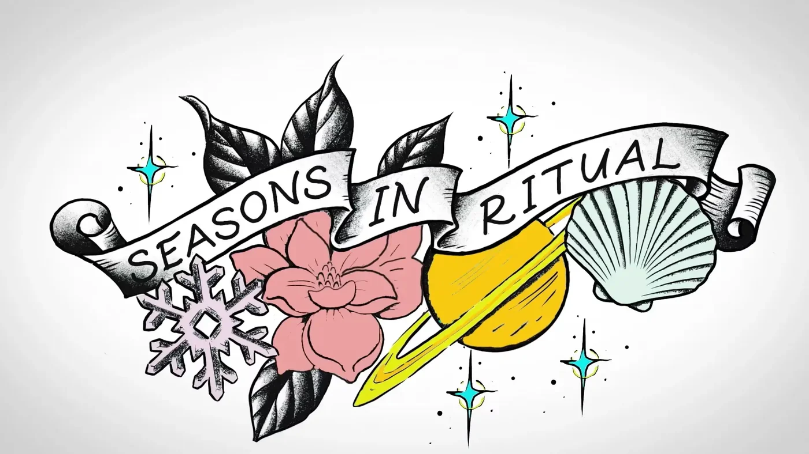

Hey friends, I'm Jamie
I'm an intuitive practitioner living in New Orleans. I've been a helper and a channel my whole life; reading tarot and astrology has been my full-time work since the pandemic. I'm an empath and an optimist. I can't help it.
People always came to me with their problems
Before New Orleans
I had a store in Tuscaloosa called Grace Aberdeen: vintage furniture, DIY projects, local art, vintage clothes. And no matter what I was selling, people came in and told me what was really going on in their lives. Helping them was how I worked with Spirit, even then.
Going all in
During the pandemic I made the reading work my whole work. My family wasn't surprised. We're Catholic, and they'll tell you I was just always like this. I've been having talks with the Moon my entire life.
How I practice
I keep things extremely present: how you feel now, what you can do now. I'm Reiki trained, I make my goods with intention, and I put my videos out close to the actual moons on purpose. For the record: Aquarius sun, Gemini rising, Leo moon.
“The way that I use cards and astrology and work with Spirit is to help you get to where you would like to be. I don't see it as fortune telling. I see it as themes, energy.”
Jamie, from her YouTube channel
Watch before you book
I've shared hundreds of free videos: dark moon check-ins, astrology chats, card pulls for the collective, and conversations with healers I admire. It's the easiest way to get a feel for how I read before we ever sit down together.
Visit the channel
Okay friends, I'll leave it there
If you have any questions, please reach out. And when you're ready, come sit with me on Magazine Street or on Zoom.
Book a Reading Email Jamie